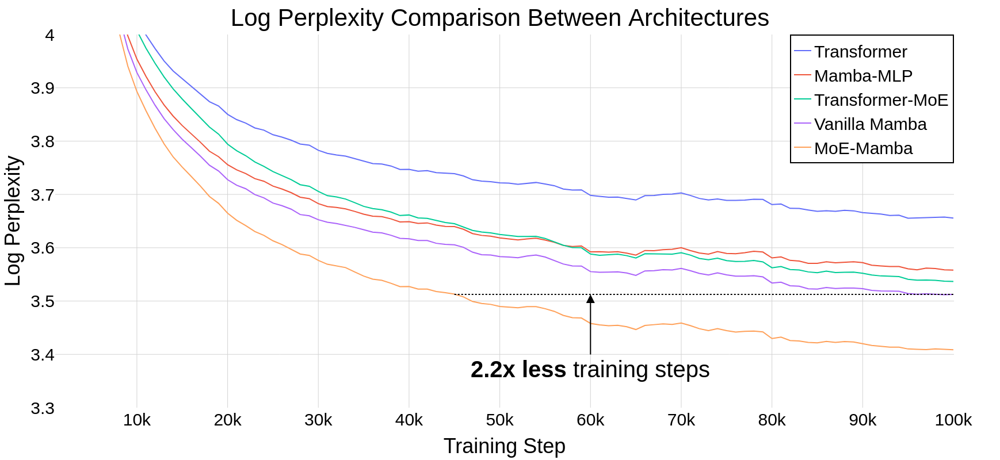
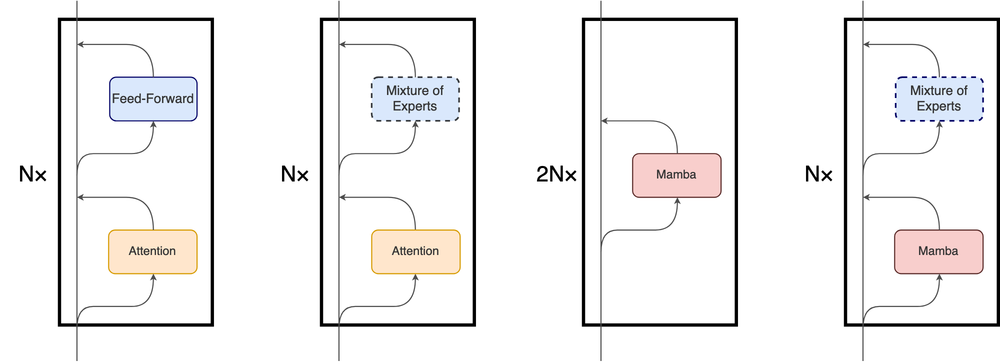
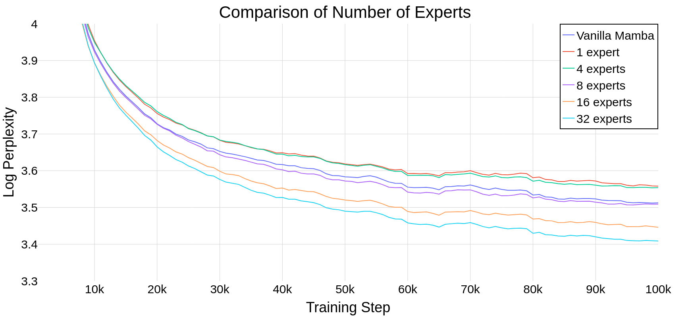
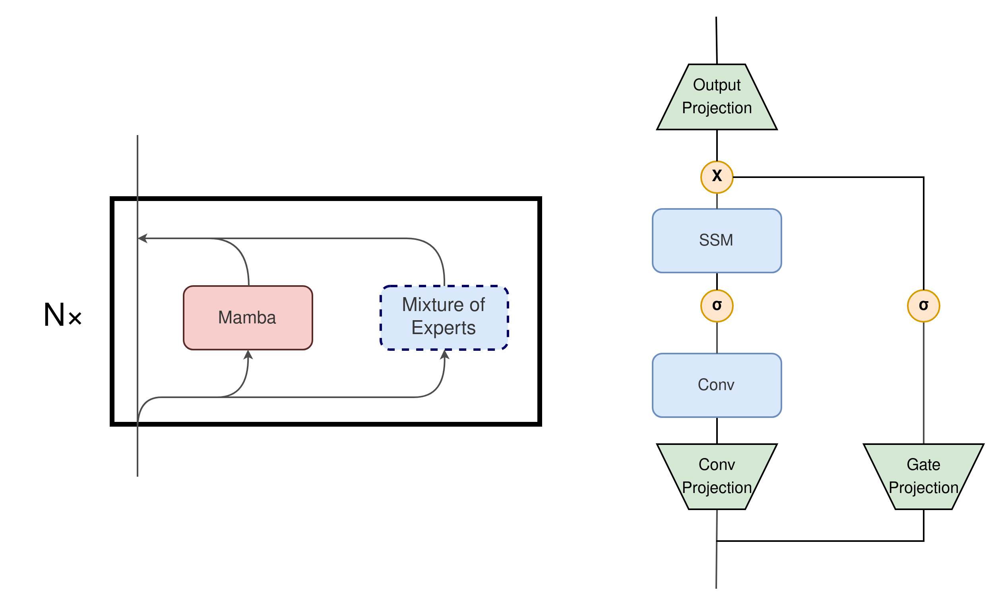
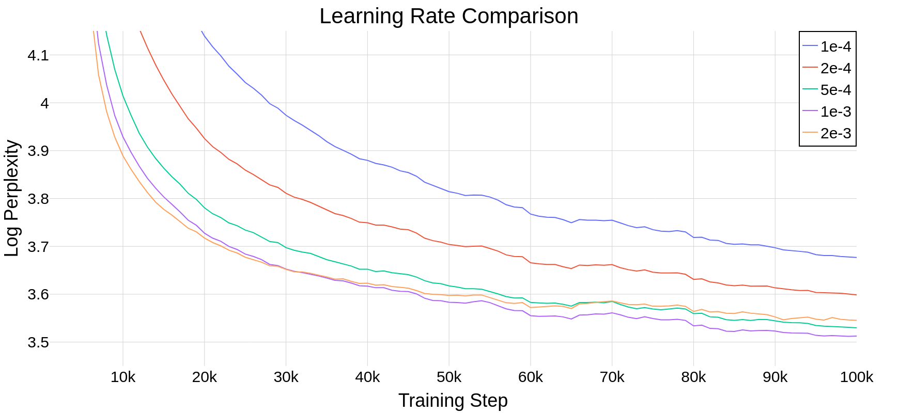

See also arXiv version.
Abstract
State Space Models (SSMs) have become serious contenders in the field of sequential modeling, challenging the dominance of Transformers. At the same time, Mixture of Experts (MoE) has significantly improved Transformer-based LLMs, including recent state-of-the-art open-source models. We propose that to unlock the potential of SSMs for scaling, they should be combined with MoE. We showcase this on Mamba, a recent SSM-based model that achieves remarkable, Transformer-like performance. Our model, MoE-Mamba, outperforms both Mamba and Transformer-MoE. In particular, MoE-Mamba reaches the same performance as Mamba in 2.2x less training steps while preserving the inference performance gains of Mamba against the Transformer.

Introduction
State Space Models (SSMs), e.g. (Gu et al., 2021; Gu et al., 2022; Gu and Dao, 2023), have recently been gaining attention as a possible alternative to Transformers due to linear-time inference, parallelizable training, and strong performance on long-context tasks. In particular, Mamba introduced in (Gu and Dao, 2023) achieves excellent results through the use of selective SSMs and hardware-aware design, being a promising alternative to the attention-based Transformer architecture.
In this paper, we advocate that to unlock the potential of SSMs for scaling up, they should be combined with Mixture of Experts (MoE). MoEs (Fedus et al., 2022; Sanseviero et al., 2023) are efficient techniques that are now routinely used for scaling up Transformers, e.g., in the recent Mixtral model (Mistral, 2023).
We introduce MoE-Mamba, a model that combines Mamba with a Mixture of Experts layer. MoE-Mamba enables efficiency gains of both SSMs and MoE. We also show that MoE-Mamba acts predictably when the number of experts varies (Section Ablations).
Our experiments, see Figure 1, confirm that MoE-Mamba requires 2.2x less training steps to achieve the same performance as Mamba and shows potential gains over Transformer and Transformer-MoE. The preliminary results indicate a very promising research direction that may allow scaling SSMs to tens of billions of parameters.
Model Architecture
Although the main underlying mechanism of Mamba differs significantly from the attention mechanism used in Transformers, Mamba retains the high-level, block-based structure of Transformer models. In this paradigm, identical blocks comprising one or more layers are stacked one after another, with each layer’s output being added to the residual stream (Figure 2). The final value of the residual stream can subsequently be used to predict the next token in the language modeling task.
In our design, we leverage the compatibility of the two architectures. In MoE-Mamba, every other Mamba layer is replaced with a MoE feed-forward (FF) layer based on Switch (Fedus et al., 2022), as shown in Figure 2. We note some similarities of this design to one of the approaches explored by (Gu and Dao, 2023), in which interleaving Mamba layers with FF layers resulted in a small decrease in performance compared to vanilla Mamba. This setup is denoted as Mamba-MLP in Figure 1.
MoE-Mamba separates unconditional processing of every token by the Mamba layer - which can efficiently integrate the whole context of the sequence into an internal representation - and conditional processing by a MoE layer that can apply the most relevant expert for each token. The idea of interleaving conditional and unconditional processing is used in some MoE-based models, typically by alternating vanilla and MoE feed-forward layers (Lepikhin et al., 2020; Fedus et al., 2022).

Alternative Designs
In addition to the experiments related to interleaving Mamba with MoE, we also conducted other experiments, modifying the original block design by (Gu and Dao, 2023) to feature conditional computation. We expect this research direction to be important in future attempts to improve the Mamba architecture. We address those experiments in the Appendix, Section Alternative Designs.
Main Results
Training Setup
We compare 5 different settings: vanilla Transformer, Mamba, Mamba-MLP, MoE and MoE-Mamba. In most Transformers, the feed-forward layer contains \(8dm^2\) parameters, whereas (Gu and Dao, 2023) makes Mamba layers smaller (ca. \(6dm^2\)) so that two Mamba layers match the combined parameter count of a feed-forward layer and an attention mechanism. To keep the number of active parameters per token roughly the same in Mamba and in our model, we scale down the size of each expert feed-forward layer to \(6dm^2\). Excluding embedding and unembedding layers, all models access around 26M parameters per token. We train the models on approximately 6.5B tokens and 100k steps.
We train the model using the English C4 dataset (Raffel et al., 2020) on the task of next token prediction. The text is tokenized using GPT2 tokenizer (Radford et al., 2019). LR was tuned for vanilla Mamba (see Appendix, Section and re-used for all other training runs. For a full rundown of hyperparameters, see the hyperparameters table.

Results
| Model | # Parameters | # Active Parameters per Token | Loss After 100k Steps | % Steps to Transformer Loss | % Steps to Vanilla Mamba Loss |
|---|---|---|---|---|---|
| Transformer | 25M | 25M | 3.66 | 100% | >100% |
| Mamba-MLP | 26M | 26M | 3.56 | 38% | >100% |
| Tranformer-MoE | 545M | 25M | 3.54 | 42% | >100% |
| Vanilla Mamba | 27M | 27M | 3.51 | 30% | 100% |
| Mamba-MoE | 416M | 26M | 3.41 | 21% | 46% |
Table 1 presents the results of training. MoE-Mamba shows a remarkable improvement over the vanilla Mamba model. Notably, MoE-Mamba was able to achieve the same performance as vanilla Mamba in just 46% of training steps. Because the learning rate was tuned for vanilla Mamba (see Appendix, Section LR Tuning, we expect even better performance if the training procedure is optimized for MoE-Mamba. Like (Gu and Dao, 2023), we observe that Mamba-MLP achieves slightly worse performance than vanilla Mamba.
Ablations
| Number of Experts | # Parameters | # Active Parameters per Token | Loss After 100k Steps | % Steps to Vanilla Mamba Loss |
|---|---|---|---|---|
| N/A - Vanilla Mamba | 27M | 27M | 3.51 | 100 % |
| 1 (Mamba-MLP) | 26M | 26M | 3.56 | >100% |
| 4 experts | 64M | 26M | 3.55 | >100% |
| 8 experts | 114M | 26M | 3.51 | 91% |
| 16 experts | 215M | 26M | 3.45 | 56% |
| 32 experts | 416M | 26M | 3.41 | 46% |
To assess whether Mamba scales well as the number of experts increases, we compare different numbers of experts in our model. For reference, we also include Mamba and Mamba-MLP (the latter is equivalent to MoE-Mamba with a single expert). Figure 3 shows the training runs for different numbers of experts. Table 2 shows results after 100k steps. The results show that our approach scales well with the number of experts. If the number of experts is 8 or more, our model achieves better final performance than vanilla Mamba. Since Mamba-MLP is worse than vanilla Mamba, we should expect MoE-Mamba with a small number of experts to exhibit poorer performance than Mamba. We obtain the best result with 32 experts.
Future Work and Limitations
Scaling. In this preliminary investigation, we only perform experiments on models smaller than 1B parameters. Since MoE has enabled Transformers to be scaled to unprecedented sizes (Fedus et al., 2022), we will be excited to see the impact of scaling on the approaches proposed in our work.
Integrating MoE into the Mamba Layer. Our experiments show that interleaving Mamba layer with a performant sparse MoE layer results in a promising model. However, in the dense setting, Mamba performs slightly better without the layer. This suggests that integrating sparse computation within the Mamba layer itself could yield even better results while conserving a simple, homogeneous architecture. We include some related preliminary investigations in the Appendix, Section Alternative Designs.
Exploration of Different Types of MoE in MoE-Mamba. While we base our design on the commonly used Switch, numerous other architectures have been proposed since. Not only may those designs perform better overall, but it is possible that with Mamba a different type of MoE will be optimal. Among possible changes in this regard are Expert-Choice routers (Zhou et al., 2022), fully differentiable architectures (Puigcerver et al., 2023; Antoniak et al., 2023), varying number of experts and their granularity, and other modifications.
Conclusions
In this work, we presented the first integration of Mixture of Experts with Mamba architecture, MoE-Mamba. We showed possible ways of combining those techniques and performance improvements achieved with their combination.
We look forward to the upcoming developments in both Mixture of Experts and deep State Space Models. We hope this work will spark further research on combining conditional computation (and Mixture of Experts in particular) with State Space Models (and Mamba in particular). We believe that this path will enable more efficient scaling to even larger language models.
Acknowledgements
We would like to express sincere gratitude to the rest of our team members and past team members - Jakub Krajewski, Szymon Antoniak, Michał Krutul, and Tomasz Odrzygóźdź - for engineering contributions made to our shared repository and shared research intuitions, as without them it would be impossible to proceed with our project with this velocity. We also thank our advisors and managers, Marek Cygan, Piotr Miłoś, and Piotr Sankowski, for creating a supportive environment and direction.
This work was funded by IDEAS NCBR, which also provided significant computational resources. The research was supported by PL-Grid infrastructure (grant PLG/2023/016148). We acknowledge snakes and experts as essential to our work. We also benefited from the Entropy cluster (hosted at the Faculty of Mathematics, Informatics and Mechanics of the University of Warsaw) funded by NVIDIA, Intel, the Polish National Science Center grant 2022/45/N/ST6/02222, and ERC Starting Grant TOTAL.
Citation Information
Please cite the arXiv version of this work.
References (scroll down for Appendix)
Appendix
Hyperparameters
| Model | |
| Total Blocks | 8 (16 in Mamba) |
| \(d_{model}\) | 512 |
| Feed-Forward | |
| \(d_{ff}\) | 2048 (with Attention) or 1536 (with Mamba) |
| Mixture of Experts | |
| \(d_{expert}\) | 2048 (with Attention) or 1536 (with Mamba) |
| Experts | 32 |
| Attention | |
| \(n_{heads}\) | 8 |
| Training | |
| Training Steps | 100k |
| Context Length | 256 |
| Batch Size | 256 |
| LR | 1e-3 |
| LR Warmup | 1% steps |
| Gradient Clipping | 0.5 |
Alternative Designs
In this section we explore three possible designs different than the one presented in Section Architecture. While we don’t present concrete results from those experiments, we think that in such a fast-moving field there is a value in sharing even rough ideas.
One of the conducted experiments involved replacing the Output Projection with MoE (Figure 4). The resulting model, which had fewer blocks to match the number of active parameters, achieved similar results to the original Mamba architecture. Similarly, substituting the Conv Projection layer with a MoE layer (Figure 4) yielded similar results to vanilla Mamba, which do not justify the added complexity of conditional computation. We attribute this to the reduction in the number of blocks due to the increase in the effective number of parameters used in each Mamba block by adding the MoE layer.
Another idea, inspired by (Chowdhery et al., 2023), was the parallel execution of a Mamba layer and MoE (Figure 4). However, this architecture yielded worse results even compared to vanilla Mamba when matching the number of active parameters per token.

Active Parameters vs FLOPs
In this work we report the number of active parameters (excluding embedding and unembedding layers) and not the number of floating-point operations (FLOPs), following (Zhou et al., 2022). Both numbers will be roughly similar, but the number of FLOPs is both harder to calculate and less relevant for hardware-aware architecture like Mamba with its optimizations.
Learning Rate Tuning
Due to computational limits we couldn’t tune learning rate for all of the variants of the architecture. In this preliminary investigation, we decide to tune the learning rate specifically for vanilla Mamba and re-use it for other models. This approach may only underestimate the gains of over vanilla Mamba, therefore it does not impact the main conclusions.
| LR | Loss After 100k Steps |
|---|---|
| 1e-4 | 3.68 |
| 2e-4 | 3.60 |
| 5e-4 | 3.53 |
| 1e-3 | 3.51 |
| 2e-3 | 3.55 |
| 5e-3 | unstable |

Reproducibility
The codebase used to run the experiments is available at our GitHub repo: https://github.com/llm-random/llm-random.
Citation Information
Please cite the arXiv version of this work.